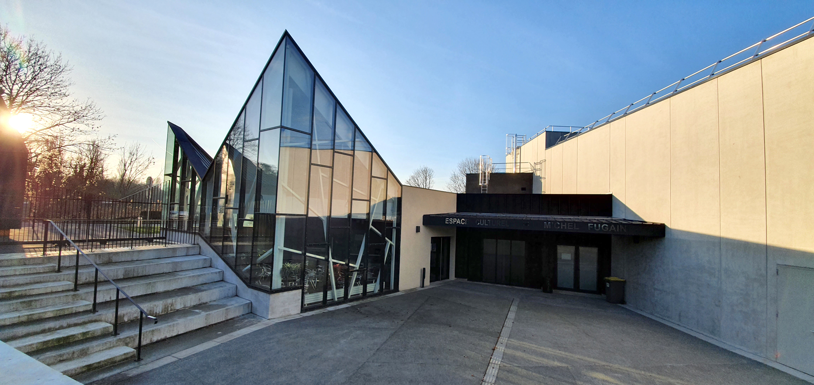

Activities
Espace Culturel Michel Fugain
1 rue de Paris - 77183 Croissy-Beaubourg
01 64 62 78 78
Inaugurée en janvier 2019, l'Espace Culturel Michel Fugain à une capacité de 420 places assises. Ce lieu moderne et optimal en matière d'acoustique, d'espace et de lumière, accueille spectacles et expositions.

École de Musique (W.A.M.)
30 rue de Paris - 77183 Croissy-Beaubourg
01 64 62 78 59
École Municipale de Musique Wolfgang Amadeus Mozart (W.A.M.)
Piano - guitare - guitare électrique - guitare jazz - violon - violon alto - violoncelle - flûte traversière - saxophone - clarinette - trompette - batterie - percussions - chant - théâtre musical.
Salle Pierre Chevet
Allée du Bois Michel Diefenthal - 77183 Croissy-Beaubourg
La salle sportive Pierre Chevet est réservée prioritairement aux associations : ASCB tennis de table, danse de salon, ASCB gym, UMENOKI section judo et section Hip Hop, les Arts Martiaux avec le SEBUKAN. Cette salle lumineuse de 230 m2 est composée de vestiaires, de nombreux placards et de douches ainsi qu'un lieu d'accueil.
Salle de l'Orangerie
Allée du Bois Michel Diefenthal - 77183 Croissy-Beaubourg
La salle polyvalente de l'Orangerie est principalement utilisée par les écoles primaires et maternelles de la commune, mais aussi par les associations sportives comme celle de badminton ou encore le foot en salle pour les enfants. Composée d'un gymnase avec gradins, de vestiaires avec douches et d'un lieu d'accueil, cette salle polyvalente peut aussi accueillir des évènements exceptionnels.
Espace Pierre de Coubertin
Allée du Bois Michel Diefenthal - 77183 Croissy-Beaubourg
La salle sportive Pierre Chevet est réservée prioritairement aux associations : ASCB tennis de table, danse de salon, ASCB gym, UMENOKI section judo et section Hip Hop, les Arts Martiaux avec le SEBUKAN. Cette salle lumineuse de 230 m2 est composée de vestiaires, de nombreux placards et de douches ainsi qu'un lieu d'accueil.

Club des Jeunes Municipal
Chemin de la Fontaine - 77183 Croissy-Beaubourg
01 60 05 26 05
Rejoins le Club des Jeunes Municipaux pour des moments inoubliables ! Tu recherches des moments palpitants et des rencontres enrichissantes ? Ne cherche plus ! Le Club des Jeunes Municipal t'ouvre ses portes avec une foule d'activités et d'événements passionnants. Sous la direction d'Isabelle et Yoan, le Club des Jeunes Municipal devient le lieu idéal pour s'épanouir, partager et s'amuser. Que tu aies 11 ou 25 ans, tu trouveras ici un espace où t'exprimer, développer ton autonomie et contribuer à la vie du club. Ce bâtiment de 400 m2, construit en 2007, est mis à la disposition du Club Municipal des Jeunes.